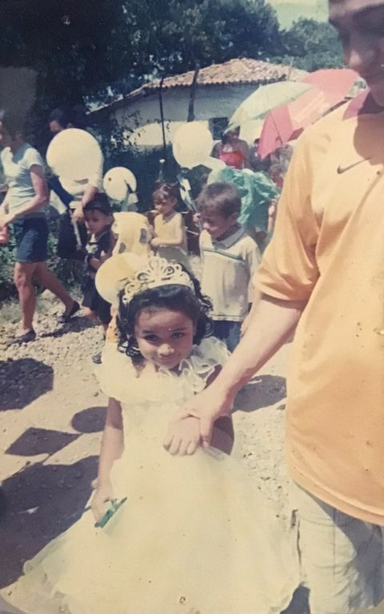
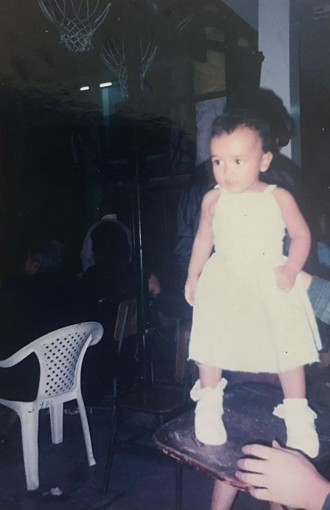

|
BIENVENIDOS A MI ESPACIO PERSONAL. Soy Ximena, tengo 17 años, nací el 02 de febrero del año 2005 en Comayagua, Honduras y les voy a contar un poco de mi vida. ESTUDIOS Curse el kinder en la inmaculada, la preparatoria en la escuela "El Espiritu Santo" junto con el primer y segundo grado, cuando llegue a tercero me pasaron a la escuela "Pequeños gigantes" y al llegar al cuarto me fui a un pueblo en una montaña por el trabajo de mi papá, luego regrese a la ciudad para el quinto y sexto grado y volví a la escuela "pequeños gigantes". Al comenzar septimo grado ingresé al "Instituto Marista La Inmaculada" donde he estudiado por 5 años y donde actualmente estoy cursando mi último año del colegio en la carrera de informática. FAMILIA Tengo 2 hermanas menores, una de 14 y otra de 9 años, no vivo con mis papás ya que mi mamá se fue a España hace casi 6 años y mi papá a Estados Unidos hace ya 3 años, cuando mi papá se fue tuvo que llevarse con el a mi hermanita la más pequeña, para poder llegar a su destino. Mi hermana y yo hemos sido nuestra propia familia desde entonces y siempre he procurado cuidar mucho de ella y ella de mí. desde que mis papás se fueron, mi abuela materna y tía se hicieron cargo de mi hermanas y de mi,y desde entonces mi abuela se volvio mi figura materna, pero el año pasado la pandemia la arrebato de mi lado, y ese fue el peor día de mi vida. UN POCO DE MI VIDA Mi niñez fue buena hasta que comencé a crecer. Empecé a sufrir bullying por parte de mis compañeros en la escuela, por mi peso y mi color de piel desde que comencé preparatoria y se podría decir que acabó cuando me gradué de sexto grado, gracias a eso siempre fuí una niña muy acomplejada con su peso y su aspecto, me volví callada e introvertida,También puedo ser extrovertida solamente cuando entro en confianza con las personas, pero he intentado cambiar un poco ese aspecto. Siempre me costó mucho hacer amigos y socializar, ahora he aprendido un poco a como hacerlo y tengo amigos increibles que no me quisiera cambiar, ya que son los que siempre estan para mi cuando las cosas no van bien en mi casa o en mi vida. VIDA AMOROSA No tengo, siempre me engañan, me cambian por otra y me rompen el corazón. Aunque siempre caigo con la miníma muestra de cariño que me den. |
|
|   | |